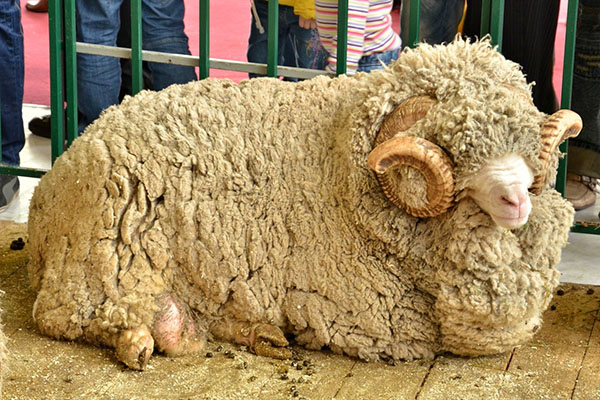

Первые упоминания валяния в Ноевом Ковчеге
Появление первых изделий подобного типа, по мнению археологов, датируется 8000 возрастом.
Согласно одной из старинных легенд, самый первый валяный ковёр появился на Ноевом Ковчеге. Перевозимых на нём овец содержали в условиях крайне ограниченного пространства.
Животные постоянно тёрлись друг о друга, клочья шерсти попадали на пол, становились влажными и постепенно уплотнялись под копытами.
Впоследствии, когда овец вывели из ковчега, в том месте, где их содержали, на полу осталось плотное полотно.
